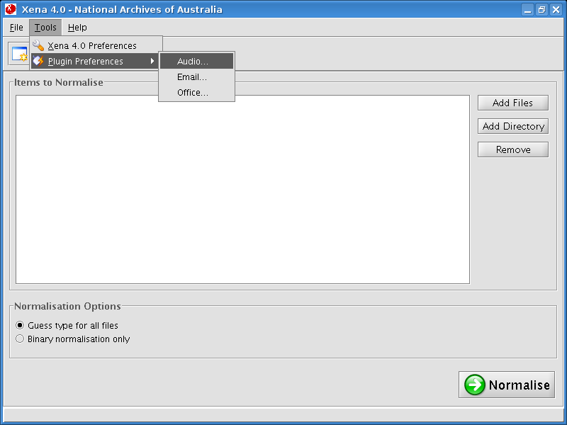

From the Xena menu, select Tools -> Plugin Preferences -> Audio.

The external tool for converting Audio files to FLAC under Windows (flac.exe) is included in the Xena package, or is available from the FLAC website http://flac.sourceforge.net. Click Browse and navigate to the location of the program, then click OK to save the setting.
NOTE: If you are running Xena under Linux or OSX, please install the flac executable through your package management system. Under Linux this will usually result in the binary residing under /usr/bin/.